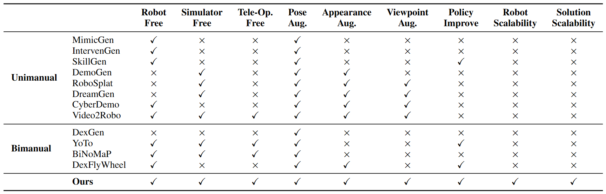

Non-chain Temporal Modeling
Interleaved sequential and collaborative skills require explicit temporal structure instead of a simple chain-like order.
Project page · Under review
↓TopoGen synthesizes diverse bimanual robotic demonstrations from only one human demonstration. A topology graph captures sequential and collaborative skill relations, then adapts arm assignment, execution order, and collision avoidance to new asset layouts.
Interleaved sequential and collaborative skills require explicit temporal structure instead of a simple chain-like order.
New asset layouts demand adaptive arm assignments, execution orders, and collision-avoidance strategies.
Multiple valid solutions and long skill sequences make the mapping from visual observations to robot actions ambiguous.
Imitation learning (IL) has become a promising paradigm for enabling robots to autonomously accomplish manipulation tasks. However, IL typically requires large-scale robotic data for policy training, making efficient data generation critical for improving policy performance. While existing data generation methods have achieved notable progress in robotic manipulation, extending them to bimanual systems remains challenging. Specifically, bimanual manipulation poses three key challenges, including non-chain temporal modeling, multi-solution strategy adaptation, and long-horizon policy learning, making it difficult to generate high-quality and scalable bimanual data under large-scale asset rearrangements. In this paper, we propose TopoGen, a framework for generating bimanual robotic data from a single human demonstration via topology graph modeling. First, TopoGen extracts contact-rich skills and constructs a topology graph to explicitly represent their sequential and collaborative logic. Second, guided by the topology graph, TopoGen leverages editable Gaussian scenes, together with the Cross-Arm Skill Transposition Module and the Proactive Spatiotemporal Avoidance Engine, to dynamically adapt skill execution strategies under diverse asset arrangements, thereby generating high-quality multi-solution bimanual data. Third, to better learn from the generated multi-solution data, TopoGen proposes a Visual-Skill-Action policy that incorporates Skill-Code to modulate visual features and improve bimanual policy learning. Extensive experiments demonstrate that TopoGen enables efficient data generation, high-quality policy learning, and robust cross-domain deployment in both simulation and real-world environments.
From temporal structure to multi-solution data and skill-guided policy learning.
Extracts contact-rich skills and encodes their sequential and collaborative relations as structured temporal guidance.
Combines cross-arm skill transposition with proactive spatiotemporal avoidance to adapt demonstrations to new layouts.
Injects predicted Skill-Code into visual features before an ACT-based action head for more decisive long-horizon learning.
Temporal modeling, data generation, augmentation, and cross-domain inference results.
Loading research demonstrations…
TopoGen unifies scalable data generation, appearance augmentation, and multi-solution policy learning.

Integrated in one data-generation framework.
Integrated in one data-generation framework.
Integrated in one data-generation framework.
Integrated in one data-generation framework.